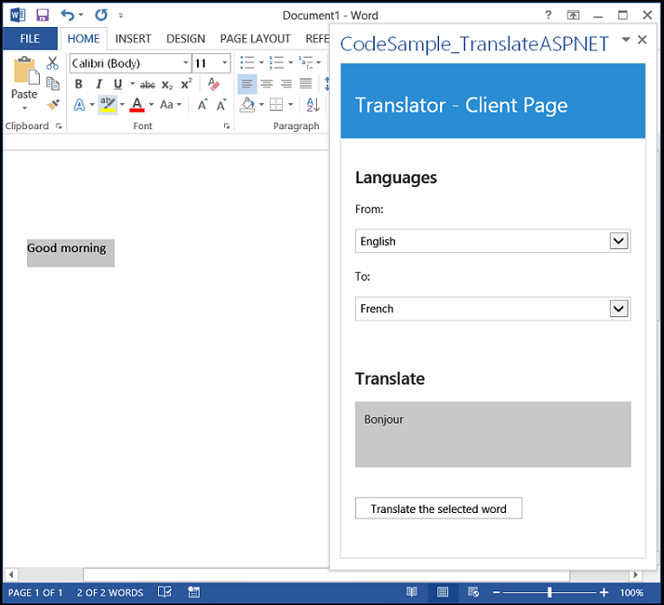

This sample demonstrates two specific techniques: how to add an ASP.NET web service in an app for Office and how to use the Microsoft Translator service. In particular, the ASP.NET web service stores the clientID and clientSecret parameters that the Microsoft Translator service requires to obtain an access token (which, in turn, is required for calling the Microsoft Translator service for a translation). The Translate.asmx file in the code sample handles HTTP requests coming from the app (Home.js), sends the translation request to the Microsoft Translator service, and then returns the results to the app. The AdminAccess.cs file in the App_Code folder is used to broker access tokens from the Microsoft Translator service.
Prerequisites
This sample requires the following:
-
Word 2013 or Excel 2013
-
Visual Studio 2012 and Office Developer Tools for Visual Studio 2012
-
Internet Explorer 9 or Internet Explorer 10
Key components
-
CodeSample_TranslateASPNET project
-
CodeSample_TranslateASPNET.xml manifest file
-
-
CodeSample_TranslateASPNETWeb project
-
Home.html file, which contains the HTML control for the app's user interface.
-
Home.js file, which contains the event handler for the Office.initialize event of the app, handles the button click event for the app's button, calls the ASP.NET web service, parses the response, and updates the UI with the output.
-
Translate.asmx file, which contains the web service on the server that handles the HTTP request from the app, stores the developer's client ID and client secret, and sends translation requests to the Microsoft Translator service.
-
AdminAccess.cs code file, which contains the AdmAuthentication and AdmAccess classes that update the access token for the server to communicate with the Microsoft Translator service.
-
Configure the sample
To configure the Translator app, get a client ID and client secret from the Azure DataMarket.
For more information, see Obtaining an access token.
Build the sample
Choose the F5 key to build and deploy the app.
Run and test the sample
Choose the F5 key to build and deploy the app.
Troubleshooting
If the app fails to install, ensure that the XML in your manifest file parses correctly.
If the app raises a "400: Bad request" exception, ensure that you have replaced the constants in the Translate.asmx file with your own client ID and client secret values. Also, ensure that the HTTP request to the Microsoft Translator service has an Authorization header with a value set to "Bearer", a space, and a current access token for the Microsoft Translator service.
Change log
First release: April 2013